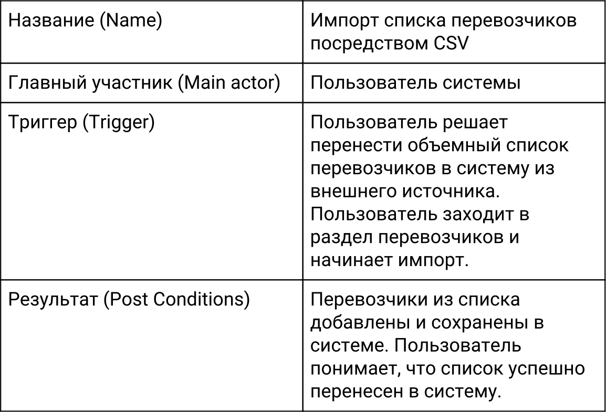
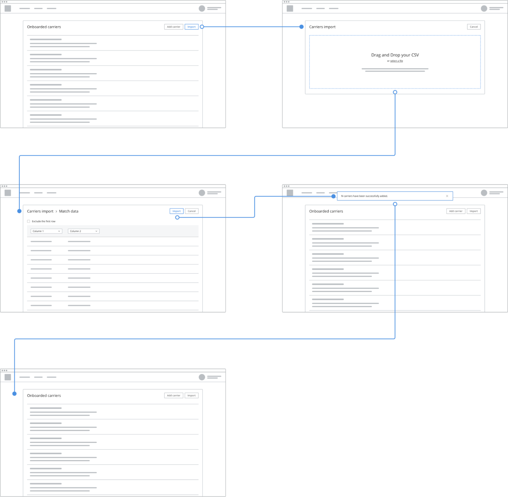
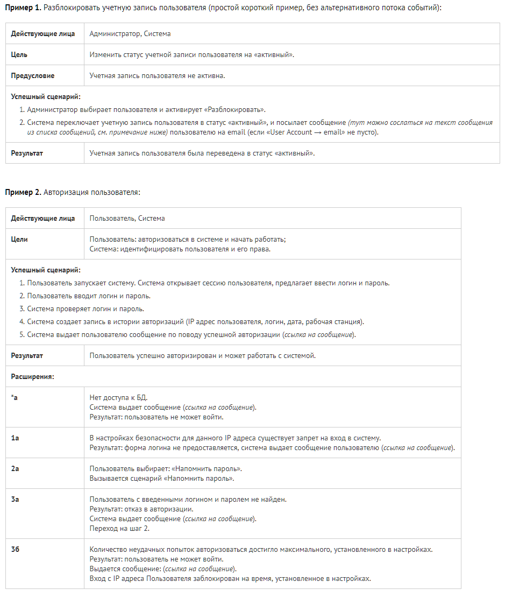

Use case (сценарий использования)
Определение
Use case - сценарий использования - письменное описание того, как пользователь может взаимодействовать с системой, чтобы достичь определённой цели.
Use Case - последовательность простых шагов, которые пользователь должен пройти, чтобы достичь цели.
В большинстве случаев Use Case описывает, что делает система, а не как.
Use case может быть дополнен графикой, например простой workflow-диаграммой. Это делает Use Case более простым для восприятия и получения обратной связи. Но делать это не обязательно.
Структура Use Case
В зависимости от сложности и детализированности Use Case может содержать следующие элементы:
- Название (Name) — название Use Case: короткое, понятное, отражающее суть.
- Краткое описание (Brief Description) — текст, описывающий данный Use Case.
- Участники (Actors) — список участников взаимодействия. Часто состоит из одного человека.
- Предусловия (Preconditions) — условия, которые должны быть выполнены перед началом реализации данного Use Case.
- Триггер (Trigger) — событие или условие, которое заставляет пользователя приступить к выполнению Use Case.
- Базовый сценарий (Basic Flow) — последовательность действий, которые выполняет участник для успешного достижения цели. Также может называться Normal Flow, Primary Scenario и Happy Path.
- Альтернативные сценарии (Alternative Flows) — описание альтернативных сценариев выполнения Use Case. Важное условие альтернативных сценариев — участник в итоге успешно достигает цели.
- Исключительные сценарии (Exceptional Flows) — все, что может привести участника к невыполнению Use Case.
- Постусловие (Post Conditions) — результат после выполнения Use Case.
Пример простейшего use case

Basic Flow (B1)
- Пользователь начинает импорт перевозчиков.
- Пользователь нажимает импорт перевозчиков через CSV-файл.
- Система дает возможность выбрать файл с компьютера или перетащить его для загрузки.
- Пользователь использует выбор файла с компьютера.
- Пользователь выбирает CSV-файл со списком перевозчиков.
- Система обрабатывает выбранный файл.
- Система проверяет файл на наличие ошибок.
- Система не находит ошибок, препятствующих дальнейшей работе.
- Система выводит предпросмотр данных загруженного файла.
- Система предлагает сопоставить типы данных.
- Пользователь сопоставляет типы данных с теми, что есть в системе.
- Пользователь нажимает импорт.
- Система импортирует данные.
- Система проводит все необходимые проверки.
- Система успешно заканчивает импорт перевозчиков.
- Система показывает обновленный список перевозчиков.
- Система информирует пользователя об успешном завершении задачи.
- Пользователь видит обновленный список перевозчиков.
Use Case можно сопроводить быстро заскетчированными основными экранами — так проще донести до другого человека суть происходящего.
Вроде таких:

Польза use cases
Чем полезно написание сценариев для продукта:
- Проектирование интерфейса и опыта взаимодействия происходят быстро и просто.
- Интерфейс получается более понятным и логичным, повышая эффективность работы и обучения.
- Быстро выявляются ошибки спроектированного опыта взаимодействия.
- Более значимые элементы интерфейса легче выносить на верхний уровень.
- Появляется понимание того, что может пойти не так в ходе взаимодействия пользователя с продуктом.
- Use Case помогает дизайнеру объяснить другим участникам команды, как должен вести себя продукт.
- Помогает экономить время на изготовление дизайна, убирая ненужные части продукта.
Дополнительные примеры сценариев

Общие рекомендации по написанию сценариев
Используйте минимальное количество слов и пунктов, необходимых для однозначного понимания сценария. Если юзкейс получается слишком длинный, возможно, лучше будет разбить его на несколько. С очень длинными сценариями, с большим количеством расширений, работать крайне неудобно.
Если в двух и более сценариях повторяется одинаковый набор шагов, есть смысл вынести эти шаги в отдельный сценарий, и ссылаться на них. Документ будет легче. А если что-то в этих шагах поменяется, то достаточно будет изменить в одном месте.
Список сообщений, которые система выдает пользователю, стандартные тексты электронных писем и т.п. удобно расположить в едином месте в документе, и ссылаться на нужный пункт из разных юзкейсов, т.к. сообщения в сценариях часто дублируются.
Источники: